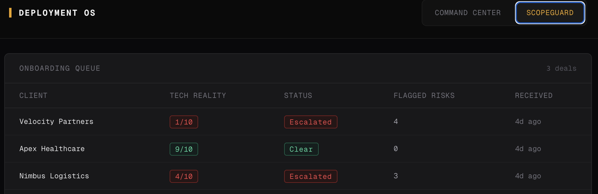

Live System
ScopeGuard
Most GTM systems focus on getting the deal. Almost nothing protects what happens after the deal closes. Sales promises something to win the deal; delivery inherits those promises and discovers the over-commitments in month two — the timeline that was never realistic, the integration that doesn't exist, the volume the team can't support. By then it's a fire, and the client relationship takes the hit.
The challenge: catch over-promised deals at the moment they close — before kickoff — without flagging every ambitious-but-doable deal and drowning the team in false alarms.
ScopeGuard is a post-sales validation layer, built on the same platform as Deployment OS. When a deal closes, it:
- Takes what sales committed to — deal notes, or in production, the call transcript.
- Diffs every commitment against an operational constraints file: the delivery team's actual envelope — real timelines, real volume ramps, which integrations exist vs. which are roadmap, real support SLAs.
- Classifies each commitment as SAFE (inside the envelope), STRETCH (doable but tight — noted, not escalated), or VIOLATION (outside the envelope).
- Scores delivery risk 1–10 and routes: clean deals auto-clear, risky deals escalate to the delivery team with flagged risks and a suggested intervention — before kickoff.

The system doesn't decide what's deliverable — operations writes the envelope once, and the system enforces it on every deal. Doable promises sail through untouched. Only genuine over-commitments get flagged.
A system that cries wolf gets ignored in a month. This one only pulls human attention to the deals that actually need it.
What this is built to move:
- Pre-kickoff catch rate — over-promised deals caught before delivery starts vs. discovered in month two.
- Alert precision — percentage of escalations that are genuine risks (low false-positive rate).
- Time-to-intervention — from deal close to delivery team awareness, in minutes.
- Relationship saves — deals where early intervention reset expectations before they became churn.
Want to stop over-promised deals before kickoff?
Let's talk →